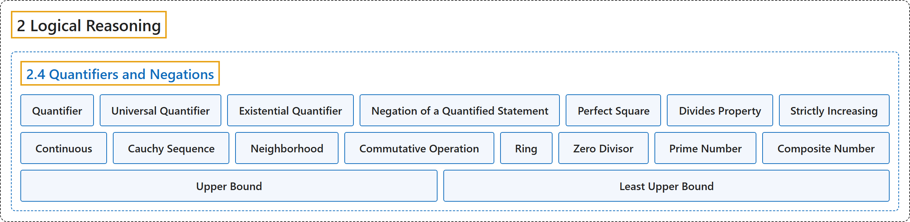

2.4 Quantifiers and Negations
Classification

Glossary
| Term | Definition | 中文翻译 | Source |
|---|---|---|---|
| 2 Logical Reasoning 逻辑推理 |
(No definition) | （无定义） | Sundstrom, 2022, chapter 2 |
| 2.4 Quantifiers and Negations 量词与否定 |
(No definition) | （无定义） | Sundstrom, 2022, section 2.4 |
| Quantifier 量词 |
"Another way is to make some claim about the truth set of the open sentence. This is often done by using a quantifier." | 另一种方法是对开语句的真值集做出某种断言。这常常通过量词来实现。 | Sundstrom, 2022, section 2.4 |
| Universal Quantifier 全称量词 |
"The phrase “for every” (or its equivalents) is called a universal quantifier." | 短语“对每个”（或其等价说法）称为全称量词。 | Sundstrom, 2022, section 2.4 |
| Existential Quantifier 存在量词 |
"The phrase “there exists” (or its equivalents) is called an existential quantifier." | 短语“存在”（或其等价说法）称为存在量词。 | Sundstrom, 2022, section 2.4 |
| Negation of a Quantified Statement 量化陈述的否定 |
"When we write \(\neg \left( {\forall x} \in U \right)\left[ {P\left( x \right)} \right]\text{,}\) we are asserting that the statement \(\left( {\forall x} \in U \right)\left[ {P( x )} \right]\) is false. This is equivalent to saying that the truth set of the open sentence \(P( x )\) is not the universal set." | 当我们写 \(\neg \left( {\forall x} \in U \right)\left[ {P\left( x \right)} \right]\) 时，是在断言陈述 \(\left( {\forall x} \in U \right)\left[ {P( x )} \right]\) 为假。这等于说开语句 \(P( x )\) 的真值集不是全集。 | Sundstrom, 2022, section 2.4 |
| Perfect Square 完全平方数 |
"A natural number \(n\) is a perfect square provided that there exists a natural number \(k\) such that \(n = k^2\text{.}\)" | 如果存在自然数 \(k\) 使得 \(n = k^2\)，自然数 \(n\) 就是完全平方数。 | Sundstrom, 2022, section 2.4 |
| Divides Property 整除性质 |
"An integer \(m\) is said to have the divides property provided that for all integers \(a\) and \(b\text{,}\) if \(m\) divides \(ab\text{,}\) then \(m\) divides \(a\) or \(m\) divides \(b\text{.}\)" | 如果对所有整数 \(a\) 和 \(b\)，若 \(m\) 整除 \(ab\)，则 \(m\) 整除 \(a\) 或 \(m\) 整除 \(b\)，就说整数 \(m\) 具有整除性质。 | Sundstrom, 2022, section 2.4 |
| Strictly Increasing 严格递增 |
"In calculus, we define a function \(f\) with domain \(\mathbb{R}\) to be strictly increasing provided that for all real numbers \(x\) and \(y\text{,}\) \(f\left( x \right) \lt f\left( y \right)\) whenever \(x \lt y\text{.}\)" | 在微积分中，定义域为 \(\mathbb{R}\) 的函数 \(f\) 称为严格递增，如果对所有实数 \(x\) 和 \(y\)，\(f\left( x \right) \lt f\left( y \right)\) 只要 \(x \lt y\)。 | Sundstrom, 2022, section 2.4 |
| Continuous 连续 |
"In calculus, we define a function \(f\) to be continuous at a real number \(a\) provided that for every \(\varepsilon > 0\text{,}\) there exists a \(\delta > 0\) such that if \(\left\vert {x - a} \right\vert \lt \delta\text{,}\) then \(\left\vert {f\left( x \right) - f\left( a \right)} \right\vert \lt \varepsilon\text{.}\)" | 在微积分中，函数 \(f\) 称为在实数 \(a\) 处连续，如果对每个 \(\varepsilon > 0\)，存在 \(\delta > 0\) 使得若 \(\left\vert {x - a} \right\vert \lt \delta\)，则 \(\left\vert {f\left( x \right) - f\left( a \right)} \right\vert \lt \varepsilon\)。 | Sundstrom, 2022, section 2.4 |
| Cauchy Sequence 柯西序列 |
"In advanced calculus, a sequence of real numbers \(\left(x_1, x_2, \ldots, x_k, \ldots \right)\) is called a Cauchy sequence provided that for each positive real number \(\varepsilon\text{,}\) there exists a natural number \(N\) such that for all \(m, n \in \mathbb N\text{,}\) if \(m > N\) and \(n > N\text{,}\) then \(\left\vert x_n - x_m \right\vert \lt \varepsilon\text{.}\)" | 在高等微积分中，实数数列 \(\left(x_1, x_2, \ldots, x_k, \ldots \right)\) 称为柯西序列，如果对每个正实数 \(\varepsilon\)，存在自然数 \(N\) 使得对所有 \(m, n \in \mathbb N\)，若 \(m > N\) 且 \(n > N\)，则 \(\left\vert x_n - x_m \right\vert \lt \varepsilon\)。 | Sundstrom, 2022, section 2.4 |
| Neighborhood 邻域 |
"A set \(M\) of real numbers is called a neighborhood of a real number \(a\) provided that there exists a positive real number \(\varepsilon\) such that the open interval \((a - \varepsilon, a + \varepsilon)\) is contained in \(M\text{.}\)" | 实数集 \(M\) 称为实数 \(a\) 的邻域，如果存在正实数 \(\varepsilon\) 使得开区间 \((a - \varepsilon, a + \varepsilon)\) 包含于 \(M\)。 | Sundstrom, 2022, section 2.4 |
| Commutative Operation 可交换运算 |
"In abstract algebra, an operation \(*\) on a set \(A\) is called a commutative operation provided that for all \(x, y \in A\text{,}\) \(x * y = y * x\text{.}\)" | 在抽象代数中，集合 \(A\) 上的运算 \(*\) 称为可交换运算，如果对所有 \(x, y \in A\)，\(x * y = y * x\)。 | Sundstrom, 2022, section 2.4 |
| Ring 环 |
"In abstract algebra, a ring consists of a nonempty set \(R\) and two operations called addition and multiplication." | 在抽象代数中，环由一个非空集合 \(R\) 和两种称为加法与乘法的运算组成。 | Sundstrom, 2022, section 2.4 |
| Zero Divisor 零因子 |
"A nonzero element \(a\) in a ring \(R\) is called a zero divisor provided that there exists a nonzero element \(b\) in \(R\) such that \(ab = 0\) or \(ba = 0\text{.}\)" | 环 \(R\) 中的非零元素 \(a\) 称为零因子，如果存在非零元素 \(b\) 属于 \(R\) 使得 \(ab = 0\) 或 \(ba = 0\)。 | Sundstrom, 2022, section 2.4 |
| Prime Number 素数 |
"A natural number \(p\) is a prime number provided that it is greater than 1 and the only natural numbers that are factors of \(p\) are 1 and \(p\text{.}\)" | 如果自然数 \(p\) 大于 1，并且 \(p\) 的自然数因数只有 1 和 \(p\)，它就是素数。 | Sundstrom, 2022, section 2.4 |
| Composite Number 合数 |
"A natural number other than 1 that is not a prime number is a composite number. The number 1 is neither prime nor composite." | 不等于 1 且不是素数的自然数是合数。1 既不是素数也不是合数。 | Sundstrom, 2022, section 2.4 |
| Upper Bound 上界 |
"Let \(A\) be a subset of the real numbers. A number \(b\) is called an upper bound for the set \(A\) provided that for each element \(x\) in \(A\text{,}\) \(x \leq b\text{.}\)" | 设 \(A\) 是实数集的子集。如果对 \(A\) 中的每个元素 \(x\)，都有 \(x \leq b\)，数 \(b\) 就称为集合 \(A\) 的上界。 | Sundstrom, 2022, section 2.4 |
| Least Upper Bound 最小上界 |
"A real number \(\alpha\) is the least upper bound for \(A\) provided that \(\alpha\) is an upper bound for \(A\text{,}\) and if \(\beta\) is an upper bound for \(A\text{,}\) then \(\alpha \leq \beta\text{.}\)" | 如果 \(\alpha\) 是 \(A\) 的一个上界，并且只要 \(\beta\) 是 \(A\) 的上界就有 \(\alpha \leq \beta\)，实数 \(\alpha\) 就是 \(A\) 的最小上界。 | Sundstrom, 2022, section 2.4 |
References
Sundstrom, T. (2022). Mathematical reasoning: Writing and proof (Version 2.1; PreTeXt edition by Grand Valley State University). Retrieved October 30, 2026, from https://gvsuoer.github.io/sundstrom-textbook/frontmatter.html